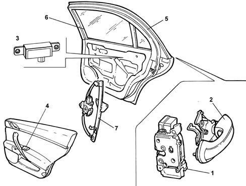

REAR DOORS
- Path
- Descriptions > 70 FITTINGS > 7010 PASSENGER COMPARTMENT REAR SIDE DOORS > REAR DOORS
- Kind
- system description
- Applies to
- all engines; all production periods
- Interactive page
- https://sloeber94.github.io/elrnDB-lThss/en/#/841005781
Applies to: all engines; all production periods
CONSTRUCTION SPECIFICATIONS
Securely fastened to the bodyshell, the doors offer an important contribution in terms of both frontal and side impacts.
They have been strengthened by a waist level crossmember that has the function of stabilizing the doors in the case of frontal impacts, preventing them from opening accidentally during the impact at the same time guaranteeing easy opening after the impact.
Behaviour in the case of side impacts has been improved by high-resistance tubular steel bars.

- 1 - Lock
- 2 - Outer handle with micro
- 3 - Passive entry
- 4 - Control panel
- 5 - Wind seal
- 6 - Seal
- 7 - Window opening mechanism
Window opening devices
The vehicle is equipped with electrically operated windows with drive type cables. The electric window control switch is located on the armrest on each door.
All the electric window control buttons are recessed to prevent them from being operated accidentally.
Anti-theft glass is available as an optional extra: the side windows are made from two sheets of glass with a film made of plastic material in between.
These windows offer the following advantages:
- they prevent injury in the case of accidents because they do not produce splinters like normal glass;
- they guarantee good resistance to break in attempts;
- in the case of small impacts from the outside (such as, for example, stone chipping) only the outer layer of glass breaks, guaranteeing the full functioning of the glass.
Seals
The door seals have been designed to guarantee a perfect seal against wind resistance.
Traditional door housing seal;
Wind seal along the entire perimeter of the door housing;
Additional seal on the door frame which, together with the door housing seal, creates a perfect seal against wind resistance.
There is a special safety senor on the inner window guide seal on each door which guarantee the reversal of the movement of the window each time there is something between the window and the actual seal.